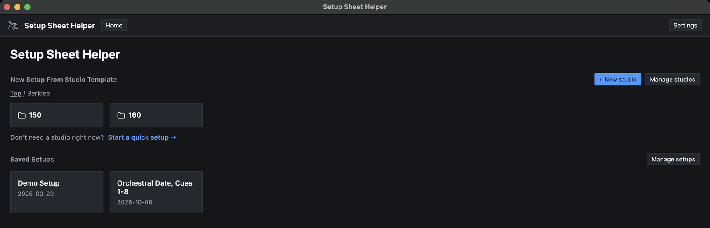
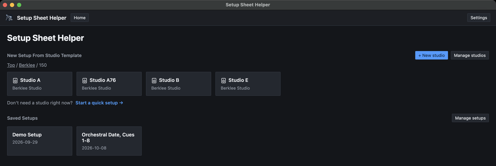

Part 9
Berklee features
If you work in Berklee's studios, the app can load every building, room and gear list for you. This part covers what that adds, how the shared gear pools work, and what happens if you turn it off again.
What Berklee features add
With Berklee features on, the app gives you:
- Buildings and studios. Every Berklee recording room, grouped by building, ready to start a setup from.
- Gear lists. Each room's mics, outboard and preamps, so the pickers show what is really in the room.
- Building office gear. Each building's shared stock, offered in every room in that building.
- The faculty reserve. Berklee's faculty pool, which you can switch on for any setup, plus a Faculty Reserve tab in Settings.
- A switch in the New setup dialog. Show Berklee faculty reserve mics appears under the Artist field.
Turning them on
The first time the app opens, it asks Pre-load Berklee studios and gear? Choose Yes, pre-load Berklee and everything above loads straight away.
If you chose No, start blank, or want to change your mind later:
-
Open Settings
Press ⌘,, or click Settings at the top right of the window.
-
Flip the switch
On the General tab, turn on Berklee features. The Faculty Reserve tab appears beside Personal Gear Locker as soon as you do.
Finding a Berklee room
On the home screen, Berklee's rooms live in a Berklee folder under New Setup From Studio Template. Open it to see one folder per building.

Open a building to see its studios. Each card reads Berklee Studio. Click one to start a new setup in that room, exactly as you would with your own studio.

Use the breadcrumb above the cards to go back up. In the other home screen layouts (File tree, Two-pane and Columns), the Berklee folder opens the same way as any other folder. Part 8 covers the layouts.
Building office gear
Each Berklee building has a building office: a shared stock of gear that any room in the building can borrow. In a gear picker it has its own group, Building Office, listed after This Studio and This Session.
When you search, a model stocked both in the room and in the building office shows up once, with the two counts added together. If Studio A has four SM-57s and the building office has two, the search result reads 0/6 in use, with a hint naming both places.
Picking that result uses the room's own copies first. The app only reaches for the building office's copies once the room's are all on other rows, so shared gear stays free for other sessions as long as possible.
Want a building office copy specifically? Skip the search and open the Building Office group in the picker instead. Each group lists its own gear separately.
Picking gear from the building office adds [Building Office] to the end of that row's Notes, so whoever sets up the session knows to fetch it.
The faculty reserve
The faculty reserve is Berklee's shared faculty pool of mics, outboard and preamps. It's off for a setup unless you switch it on, so most sessions never see it.
Switching it on for a setup
There are two places to do it:
- When you create the setup. Turn on Show Berklee faculty reserve mics in the New setup dialog.
- Any time afterward. Click Setup settings in the editor's toolbar (⌘G), and use the same switch on the General tab.
The pickers update straight away. Faculty gear appears in its own Faculty Reserve group, last in the list, and picking it adds [Faculty Reserve] to that row's Notes. Despite the switch's name, it covers faculty outboard and preamps too.
Changing the switch can be undone with ⌘Z, like any other edit to the setup.
Editing the faculty pool
Settings → Faculty Reserve lists everything in the pool, in three sections: Mics, Outboard gear and Preamps. You can change a manufacturer, name or quantity in place, remove items, and add new ones with the row at the bottom of each section. Part 10 has the details.

If the mic list gets out of hand, Factory reset puts it back to Berklee's original set. Keep in mind:
- It replaces every faculty reserve mic, including any you've added or edited.
- It only touches mics. Faculty outboard gear and preamps stay as they are.
- It can't be undone. The app asks you to confirm first.
Berklee studios are read-only
Berklee rooms don't have an Edit inventory button. Their gear lists come from Berklee and stay as shipped, so every engineer sees the same room.
If you need a changed version of a room, build your own copy:
-
Create a studio
Click + New studio on the home screen and give it a name.
-
Copy the Berklee room's gear
In the studio editor, click Import gear from another studio…, choose the Berklee room, and tick what to copy.
-
Change what you need
Edit quantities, add gear, then click Save studio.
Part 6 covers copying gear from another studio. For one-off borrowed gear, Session Gear in Setup settings is quicker; see Part 7.
Turning them off
Turn off Settings → General → Berklee features and the app hides everything Berklee: the Berklee folder, the gear lists, the Faculty Reserve tab and the faculty reserve switch.
Nothing is deleted. Setups you've already made stay in your saved setups, and if you turn the switch back on, the rooms and the faculty pool return exactly as you left them, including any edits you made to the pool.